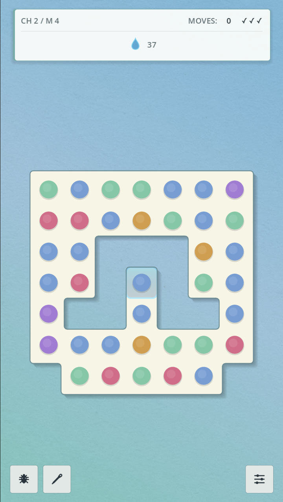
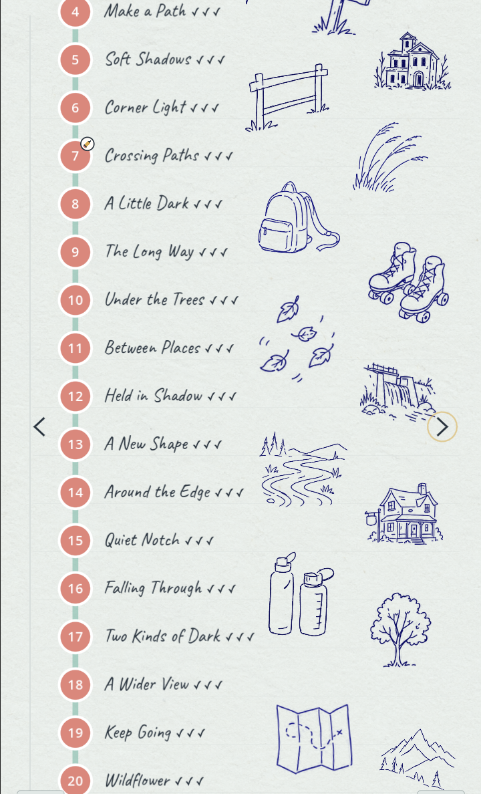

Game 01 / In development
Project: Kept
A gentle puzzle game about memories and the connections that bring the past back to life.


Game 01 / In development
A gentle puzzle game about memories and the connections that bring the past back to life.

